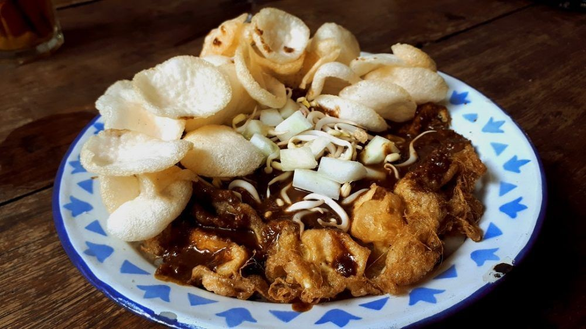

Tahu Tek Khas Surabaya

Bahan :
- Tahu putih
- 2 Telor
- 2 genggam kacang tanah goreng / -+100gr
- 4 siung bw putih
- Sedikit lada
- Garam
- Cabe rawit jika suka pedas
- 1/2sdm petis udang
- 1-2sdm kecap manis
- Daun seledri iris tipis2
- Kerupuk bawang yg biasanya juga untuk gado2
- 2 genggam Toge rebus
- Lontong atau nasi
Cara Masak Bumbu Kacang:
- Goreng kacang tanah hingga matang, boleh digoreng bersama bawang putih dan cabe rawit, sisihkan
- Jika sudah dingin blender semuanya ditambah air matang agar blender tidak berat jalannya
- Tuang di mangkok, tambahkan gula, garam, kecap manis, dan petis udang
- Aduk rata. Boleh ditambah kecap sampai dapat rasa dan warna saus yg diinginkan
Cara Masak Tahu Telor
- Kocok lepas telor
- Masukkan tahu yg sdh diiris kotak2 kecil tambahkan garam, lada, dan sedikit kaldu bubuk
- Goreng dengan wajan cekung dengan minyak yang panas dan api cenderung. kecil agar tahu matang sempurna
Plating :
- Iris lontong/nasi tata d piring, letakkan tahu telornya
- Siram sausnya
- Tambahkan toge dan terakhir irisan daun seledrinya
- Tambahkan timun jika suka Jangan lupa kerupuknya
- Sajikan selagi hangat